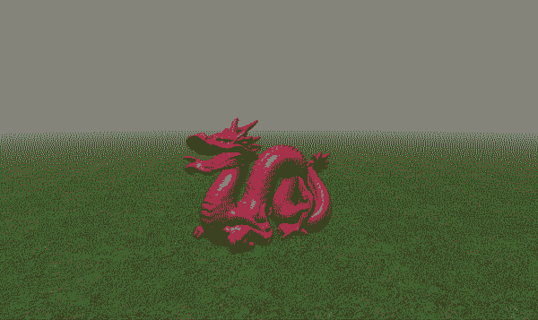
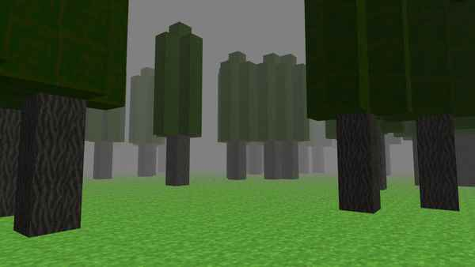
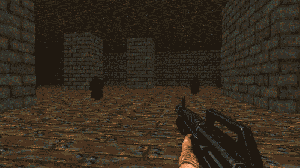

https://github.com/kevinmkchin/arx-aeternus/
I worked on this project in early 2019, and it was my first foray into making 3D applications. It was my introduction to computer graphics and writing graphics code and shaders, and it was an essential first step. It probably set off my interest in game dev technologies and engine architecture, and showed me how fun it is to make this stuff from scratch and open blackboxes and learn the inner workings of these intricate machinery we call engines.
I imitated concepts like scenes and entities from other 3D applications I encountered at the time namely Unity, Unreal, Blender. In hindsight, the things I did in this project like writing an .obj importer and glsl shaders taught me things like mesh representations and basic rendering techniques which gave me a good basis to continue growing my knowledge in computer graphics and game development.

https://github.com/kevinmkchin/ajax-engine
I took this and tried to make something with it. I initially wanted to make a 3D adaptation of the roguelike Cataclysm: Dark Days Ahead. I modified my engine to be voxel based like Minecraft loading 64x64x64 chunks at a time.

I don't quite remember anymore, but I think I was rendering and checking collisions for every single voxel that was loaded in each frame. I didn't know any better at the time, but anyways it ran painfully slow for even the simplest scenes. I put this project away, took everything I learned, and moved onto other things.
I had left this project as is for some time before I returned to it to quickly whip up a FPS demo.

https://github.com/kevinmkchin/arx-aeternus/